Christian Art: English
Old Testament

Adam & Eve (65)

Creation of the World (7)

David (12)

Judith (13)

Moses (3)

Prophets (31)
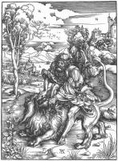
Samson (6)
Samson (6)

Scenes from the Old Testament (52)

Solomon (5)
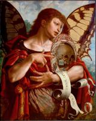
Vanitas (2)
Vanitas (2)
Virgin Mary

Annunciation (56)

Assumption (21)

Coronation of the Virgin (15)
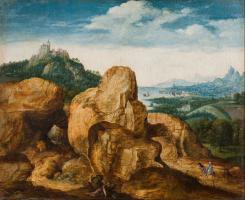
Flight into Egypt (30)
Flight into Egypt (30)
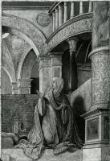
Portrait of the Virgin (18)
Portrait of the Virgin (18)
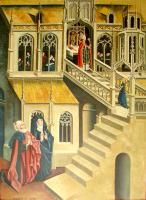
Scenes from the life of the Virgin (29)
Scenes from the life of the Virgin (29)
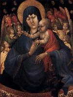
Virgin & Child (313)
Virgin & Child (313)

Virgin’s parents (11)
Jesus Christ

Adoration to Child (62)

Ascension (6)

Baptism of Jesus (6)

Crucifixion (92)
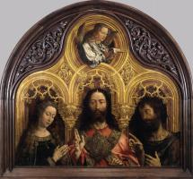
Jesus portrait (27)
Jesus portrait (27)

Jesus’ parables (12)
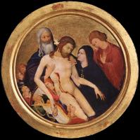
Lamentation over Christ (74)
Lamentation over Christ (74)

Last Supper (11)

Man of Sorrows (20)

Ministry of Jesus (56)

Nativity (33)

Passion of the Christ (141)

Presentation in the Temple (15)

Resurrection (45)

Transfiguration (4)
Christianity

Angels (28)

Church (53)

God the Father (4)

Hell (10)

Last Judgment (19)

Paradise (6)

Pentecost (5)

Scenes from the New Testament (36)

Trinity (10)

Vices (16)
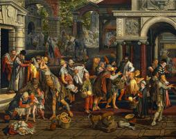
Virtues (27)
Virtues (27)
Saints

Apostle Paul (11)

Apostle Peter (11)
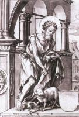
John the Baptist (23)
John the Baptist (23)
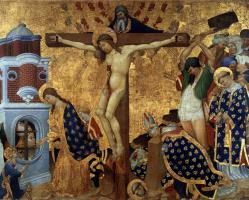
Martyrdom of saints (54)
Martyrdom of saints (54)

Mary Magdalene (19)

Saints (174)

St Anthony (23)

St Catherine (11)

St Christopher (14)
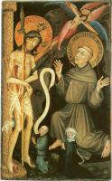
St Francis (49)
St Francis (49)

St George (18)

St Jerome (35)

St John the Evangelist (11)
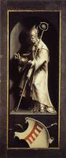
St Nicholas (9)
St Nicholas (9)

St Sebastian (15)
Artists
A
Pieter Aertsen (12)
Angelos Akotantos (16)
Albrecht Altdorfer (24)
Fra Angelico (145)
Ulrich Apt (2)
B
Derick Baegert (7)
Hans Baldung (26)
Jan de Beer (6)
Jehan Bellegambe (4)
Ambrosius Benson (16)
Willem Benson (3)
Hieronymus Bosch (44)
Hans Burgkmair (46)
C
Robert Campin (19)
Petrus Christus (17)
Joos van Cleve (38)
Colijn de Coter (10)
Michiel Coxie (13)
Lucas Cranach the Elder (239)
D
Jacques Daret (4)
Gerard David (45)
Duccio (80)
Albrecht Dürer (209)
E
Hubert van Eyck (1)
Jan van Eyck (40)
F
Jean Fouquet (23)
Nicolas Froment (3)
G
Geertgen (14)
Giotto (162)
Hugo van der Goes (16)
Jan Gossaert (60)
Matthias Grünewald (23)
H
Friedrich Herlin (8)
Jean Hey (8)
Gerard Horenbout (2)
Wolf Huber (6)
I
Adriaen Isenbrandt (14)
K
Johann Koerbecke (15)
L
Lucas van Leyden (29)
Josse Lieferinxe (8)
Stefan Lochner (18)
M
Jean Malouel (4)
Jan Mandijn (11)
Cornelis Massijs (7)
Michelangelo (36)
P
Georg Pencz (8)
R
Raphael (117)
Andreas Ritzos (9)
S
Conrad von Soest (4)
W